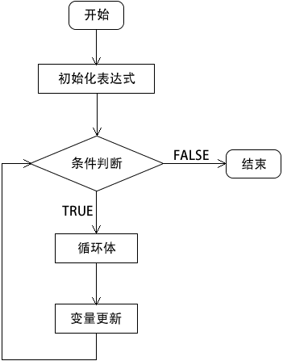

首页 > 编程笔记
PHP for循环
for 循环是 PHP 中最复杂的循环结构。for 循环语句能够按照已知的循环次数进行循环操作，适用于明确知道执行次数的情况。
for 循环的格式和前面介绍的 while 和 do while 两种循环语句不一样，for 循环将控制循环次数的变量预先定义在 for 语句中。虽然 for 循环是 PHP 中最复杂的循环结构，但使用起来非常方便。
for 循环的语法格式如下：
for 循环语句的执行流程如下图所示：
【示例】通过 for 循环来计算 100 的阶乘，实现代码如下所示：
for 循环的格式和前面介绍的 while 和 do while 两种循环语句不一样，for 循环将控制循环次数的变量预先定义在 for 语句中。虽然 for 循环是 PHP 中最复杂的循环结构，但使用起来非常方便。
for 循环的语法格式如下：
for (初始化表达式; 条件判断; 变量更新) {
循环体;
}
- 初始化表达式：通常用于声明一个计数器的初始值，即循环开始的值；
- 条件判断：用于控制是否执行循环体中的代码，如果条件为 FALSE ，则立即退出循环；
- 变量更新：循环每执行一次，马上修改计数器的值；
- 循环体：条件判断为真时，需要执行的若干代码。
for 循环语句的执行流程如下图所示：

图：for 循环执行流程
图：for 循环执行流程
【示例】通过 for 循环来计算 100 的阶乘，实现代码如下所示：
<?php
$sum = 1;
for ($i = 1; $i <= 100; $i++) {
$sum *= $i;
}
echo '100! = '.$sum;
?>
运行结果如下：
100! = 9.3326215443944E+157
注意：在 for 循环语句中，循环计数器无论是采用递增还是递减的方式，前提是一定要保证循环能够结束，无期限的循环（死循环）会导致程序的崩溃。
for 循环语句也可以像 while 语句一样嵌套使用，即在 for 循环语句中包含另外的一个或多个 for 循环语句。通过对 for 循环语句进行嵌套，可以完成一些复杂的编程。比如打印九九乘法表，示例代码如下：
<?php
for ($i = 1; $i <= 9; $i++) {
for ($j = 1; $j <= $i; $j++) {
echo $j.' * '.$i.' = '.$i*$j.' ';
}
echo '<br>';
}
?>
运行结果如下：
1 * 1 = 1
1 * 2 = 2 2 * 2 = 4
1 * 3 = 3 2 * 3 = 6 3 * 3 = 9
1 * 4 = 4 2 * 4 = 8 3 * 4 = 12 4 * 4 = 16
1 * 5 = 5 2 * 5 = 10 3 * 5 = 15 4 * 5 = 20 5 * 5 = 25
1 * 6 = 6 2 * 6 = 12 3 * 6 = 18 4 * 6 = 24 5 * 6 = 30 6 * 6 = 36
1 * 7 = 7 2 * 7 = 14 3 * 7 = 21 4 * 7 = 28 5 * 7 = 35 6 * 7 = 42 7 * 7 = 49
1 * 8 = 8 2 * 8 = 16 3 * 8 = 24 4 * 8 = 32 5 * 8 = 40 6 * 8 = 48 7 * 8 = 56 8 * 8 = 64
1 * 9 = 9 2 * 9 = 18 3 * 9 = 27 4 * 9 = 36 5 * 9 = 45 6 * 9 = 54 7 * 9 = 63 8 * 9 = 72 9 * 9 = 81
关注公众号「站长严长生」，在手机上阅读所有教程，随时随地都能学习。内含一款搜索神器，免费下载全网书籍和视频。

微信扫码关注公众号